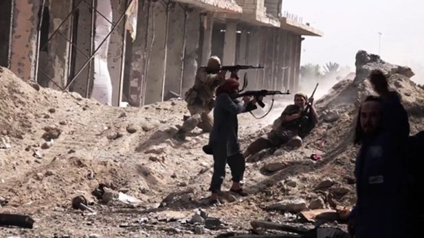

Le 17 septembre, les avions de la coalition américaine ont bombardé l'armée syrienne à Deir Ezzor, ouvrant la porte à une contre-attaque de l'Etat Islamique, qui attendait depuis longtemps cette aubaine. Cela tombe juste au moment où les Etats Unis refusent de divulguer au Conseil de sécurité de l'ONU le contenu de l'accord conclu avec la Russie sur la Syrie. Une « erreur » ? Dans ce cas, bien coordonnée avec les forces terroristes sur place.
Bien que les Etats Unis aient déjà confirmé le fait du bombardement par la coalition américaine de l'armée syrienne, la presse française continue à parler au conditionnel, refusant à tout prix d'envisager cette possibilité et ses conséquences. Et pour cause.
Le 17 septembre, alors que la coalition n'a pas prévenu d'une action dans cette zone, alors que celle-ci n'était pas planifiée, elle bombarde l'armée syrienne à proximité de Deir Ezzor, sur les hauteurs, en se fondant exclusivement sur les données apportées par le renseignement américain. Sans en informer personne, sans vérifier ou confronter ses informations.
Alors que la ligne de front dans cette ville est stable depuis longtemps, les troupes de Assad étant encerclées avec la population, défendant l'aérodrome qui est le seul moyen de connexion avec l'extérieur, et protégeant la population contre les terroristes de l'Etat Islamique.
Les bombardements ont pris fin, selon B. Chaaban, conseiller du président Assad, lorsque les terroristes ont pris les positions occupées par les soldats syriens sur les hauteurs. Cela fait beaucoup pour une coïncidence.
Malgré tout cela, les Etats Unis affirment s'être « trompés ». Résultat, 62 militaires syriens morts, 98 blessés et du matériel militaire détruit.
Comme l'affirment les Etats Unis :
« La Syrie est un théâtre d'opérations complexe avec différentes forces militaires et milices agissant dans un périmètre proche, mais la coalition ne ciblerait jamais intentionnellement une unité militaire syrienne, indique un communiqué du commandement des forces américaines au Moyen-Orient (Centcom). La coalition va se pencher sur les circonstances de cette frappe et voir si des leçons peuvent en être tirées ».
Une erreur dit-on, mais quelle erreur? Car à ce moment, précis, l'Etat Islamique reprend l'attaque et à Deir Ezzor et à Alep notamment. Heureusement, grâce aux frappes russes, l'avancée des terroristes a été bloquée. Si les Etats Unis n'ont pas coordonné leur action avec la Russie, en revanche, il semble que l'Etat Islamique s'adapte à une vitesse incroyable, et en plusieurs endroits du pays.
Sergueï Lavrov, ministre des Affaires étrangères de la Fédération de RussieC'est peut-être pour ça que la porte-parole du Ministère des affaires étrangères russe a affirmé que les Etats Unis soutenaient les terroristes :
« Nous exigeons de Washington des explications complètes et détaillées. S'agit-il d'un soutien sciemment apporté à Daech ou d'une nouvelle erreur ? Le représentant permanent de la Russie auprès de l'ONU a été chargé de convoquer une réunion spéciale du Conseil de sécurité de l'ONU. Des explications doivent être données devant le Conseil de sécurité ».
Mais vue la réaction des Etats Unis lors de la réunion spéciale du Conseil de sécurité, le doute n'est plus permis. La représentante américaine accuse la Russie d'hypocrisie, refuse que les Etats Unis puissent être « convoqués » pour s'expliquer. Alors que le représentant russe va prendre la parole, la représentante américaine sort démonstrativement et donne une conférence de presse lors de laquelle elle accuse la Russie de tous les maux. Rappelons, que la question à l'ordre du jour est le bombardement américain sur l'armée d'un Etat étranger qui lutte contre le terrorisme. Et elle ne comprend pas pourquoi la Russie a demandé pour « ça » une réunion du Conseil de sécurité, surtout un samedi soir, je cite. Elle devait avoir d'autres plans, dommage, son pays aurait pu bombarder à un autre moment.
Rappelons également que ces faits se situent sur fond de refus des Etats Unis de présenter le plan conclu avec la Russie. Le ministère russe des affaires étrangères estime que si, avant cela, ils avaient des doutes, déjà, concernant le soutien apporté à Al Nosra, maintenant ils sont obligés de tirer la conclusion effrayante que les Etats Unis défendent l'Etat islamique. Ce qui explique pourquoi ils refusent absolument la publication de l'accord bilatéral signé avec la Russie. Dans ce cas, chacun pourrait voir ce à quoi les Etats Unis se sont engagés et ce qu'ils réalisent dans les faits.
Il est peut-être temps de reconnaître que l'Etat islamique est un projet américain. Que cette hypothèse est rationnelle et n'a strictement rien à voir avec la si pratique théorie du complot. Ce type de projet n'étant pas nouveau, souvenons-nous d'Al Qaïda qui a aidé à combattre l'Union soviétique en Afghanistan. Ce projet a simplement plus d'ampleur, car le but aussi.